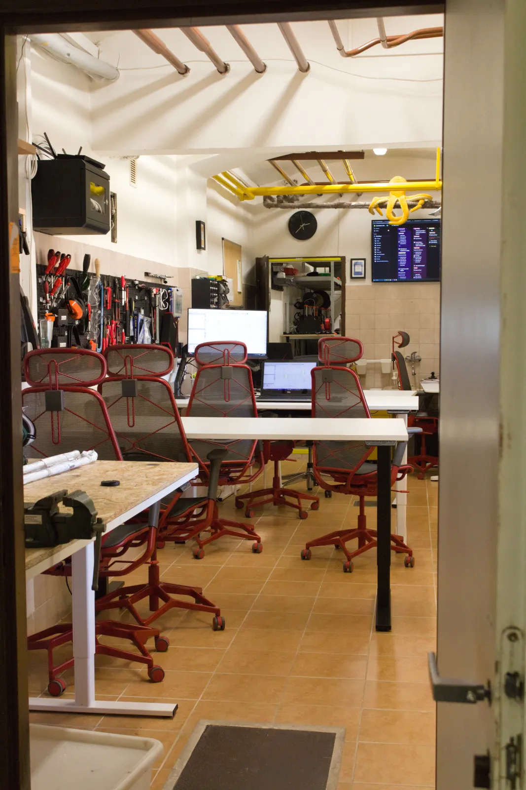
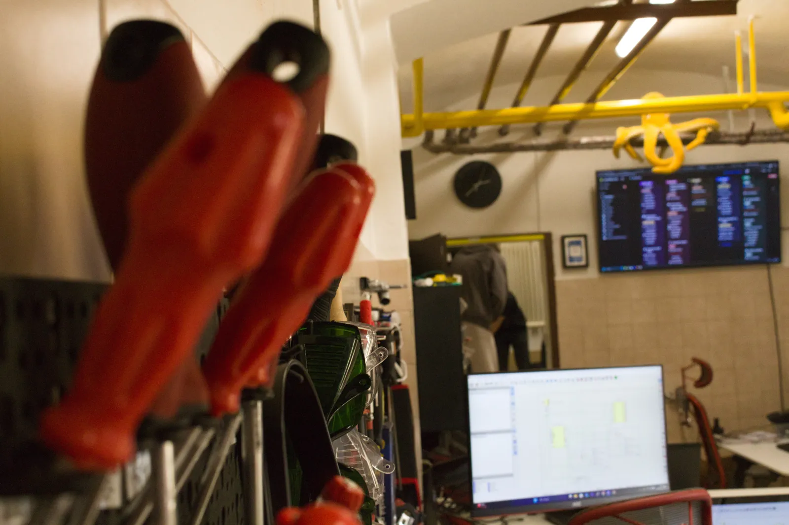
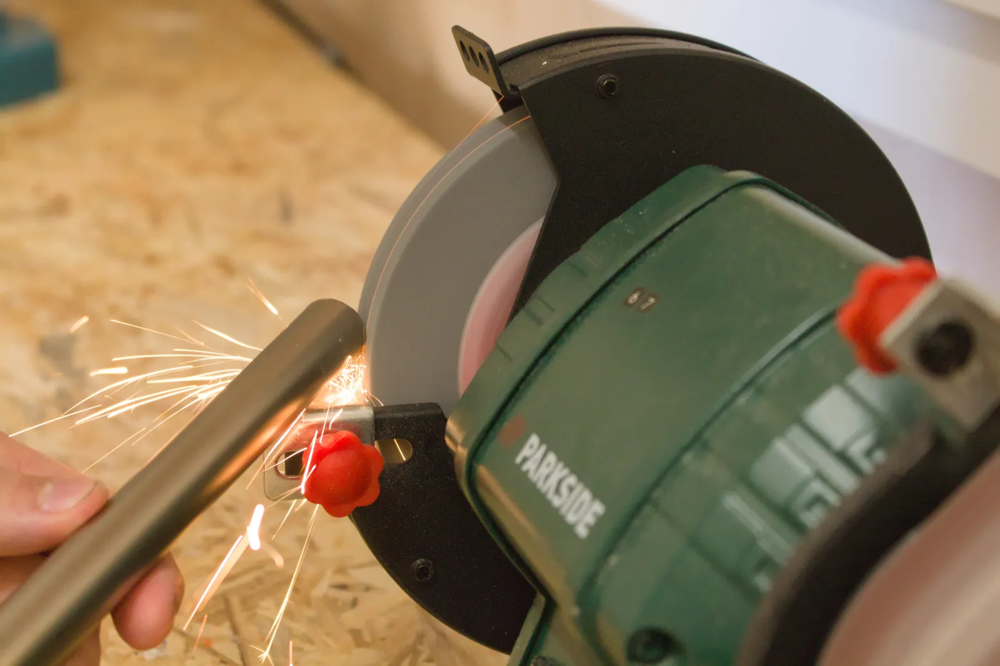
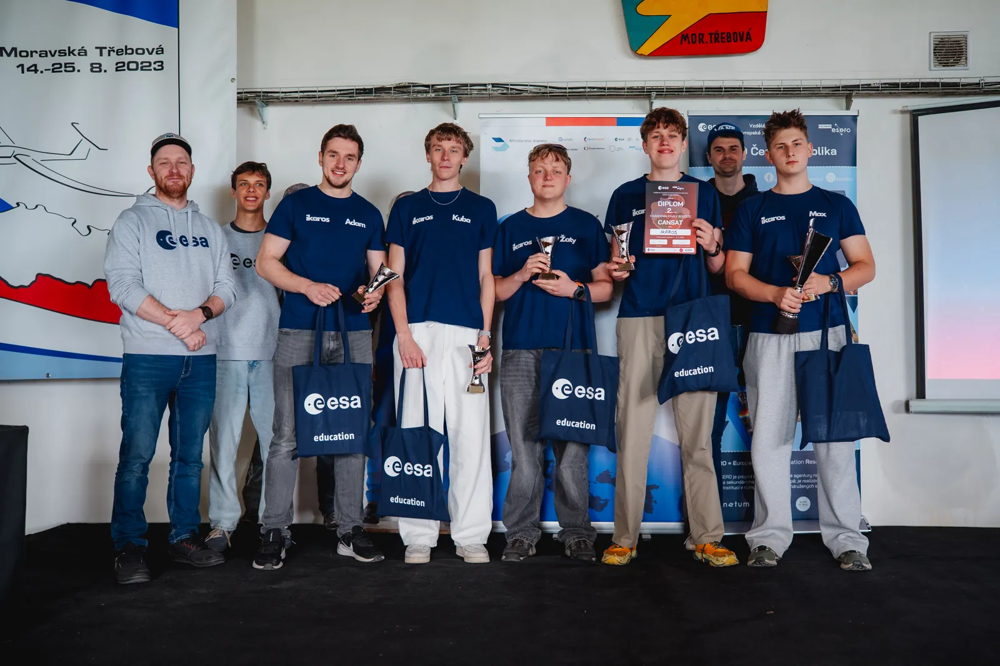
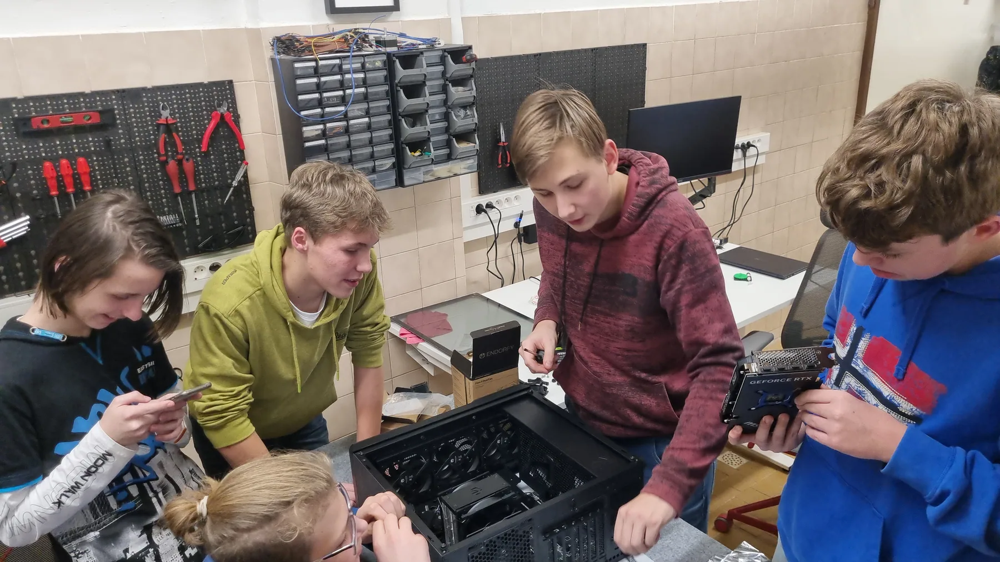
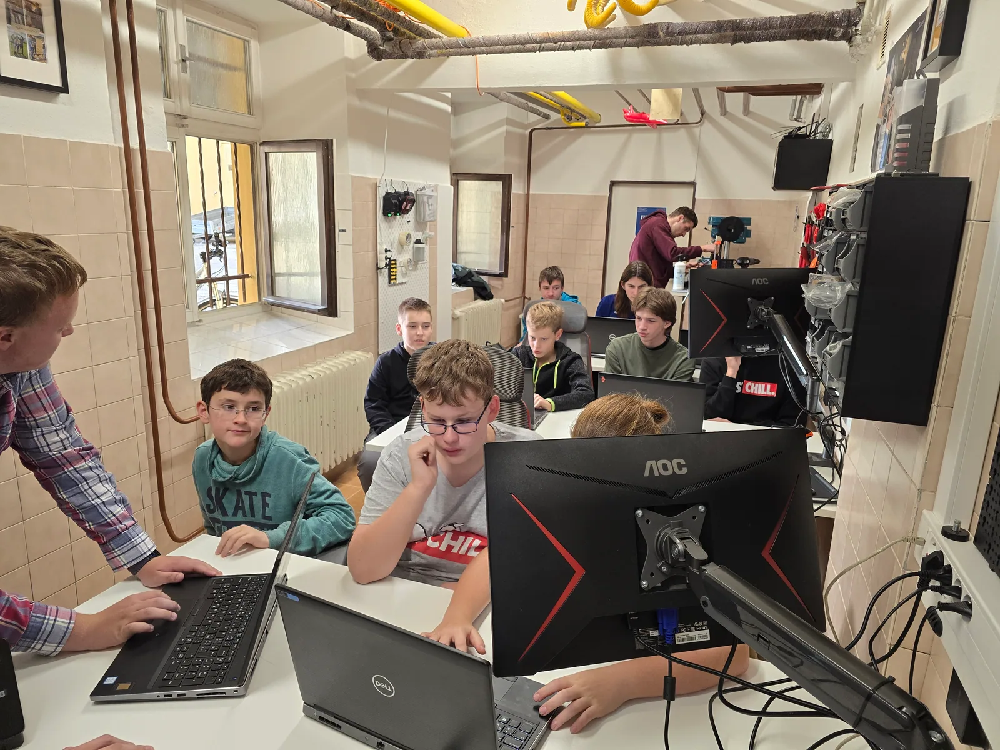
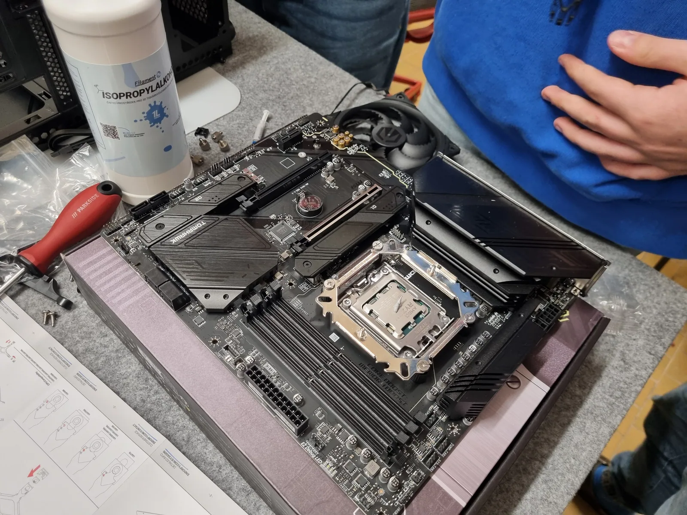

Dveře 64
V suterénu školy je místnost, kterou na plánku nenajdete. Je hned vedle výtvarky. Tisknou se v ní věci, které škola potřebuje, a občas taky věci, které nepotřebuje nikdo, jen někoho zajímalo, jestli to půjde.

Technický kroužek
Znovu otevíráme technický kroužek GypriDílny pro žáky primy, sekundy, tercie a kvarty.
Prostor, kde si můžete prakticky vyzkoušet 3D tisk, 3D modelování, základy programování, elektroniky, robotiky a tvoření vlastních projektů. Kroužek funguje na principu žáci učí žáky – mladší studenti pracují pod vedením zkušenějších spolužáků.
První setkání proběhne ve středu 7. října od 14.00 hodin.
Scházíme se zpravidla 2× do měsíce ve středu od 14.00 v místnosti č. 64 (hned vedle výtvarky).
Masarykovo gymnázium Příbor · Mgr. Petr Caloň
dilna@gypri.cz
· +420 605 089 399
První setkání: středa 7. října ve 14:00
Pro žáky primy až kvarty. Nemusíš nic umět – v první části prozkoumáš technologie, v další vytvoříš vlastní projekt.
Jedno patro dolů. Chodba vypadá jako každá jiná, dokud neotevřete dveře s číslem 64.
Co tu stojí
- Sedm tiskáren Prusa Pět modelů MK4, jedna MK3 a jedna MINI. Tisknou se na nich výukové pomůcky, prototypy a náhradní díly pro školu.
- Sedm notebooků a jeden stolní počítač Notebooky věnoval sponzor Aliance Laundry. Stolní počítač je na modely, které notebook neutáhne.
- Nástěnka s nářadím Každé má své místo a každé se vrací zpátky. Kdo si půjčí, ten vrátí.
- Pájky, měřáky a hromada součástek Bez nich se žádná deska nerozjede. Většina odpolední tady končí hledáním toho jednoho spoje, který nedrží.
- CNC a vrtačka Na díly, které jsou větší nebo pevnější, než co zvládne tiskárna.
- Krabice dílů, které se nedají koupit Protože je nikdo nevyrábí. Aretační díly na hlavové opěrky, držáky a kryty pro studentské projekty.



Něco z téhle místnosti visí v každé třídě v budově.
Gypri píšťalky jsou za bezpečnostním sklíčkem ve všech třídách. Učitelé je používají, když je potřeba přivolat pomoc nebo zkoordinovat evakuaci.
Jsou součástí krizového postupu školy. To znamená, že kdyby se tady nahoře něco stalo, část vybavení, na které se budova spoléhá, vyrobila tahle místnost v suterénu.
Navrhli, vytiskli a nainstalovali jsme je sami. Tiskneme je po stovkách. Někdy se zadaří a tiskárna jich vyplivne celou podložku naráz, jindy strávíme odpoledne laděním výšky tónu.


A pak postavili satelit
Ze stejné místnosti vzniká CanSat: satelit o velikosti plechovky od nápoje, se kterým tým IKAROS vybojoval 2. místo v ČR v programu Evropské kosmické agentury pro rok 2026.
Návrh mise, výroba modulu, testování i finálový let. Všechno se to dělo u stejných stolů, u kterých se o přestávce pájí.

Kdo tu je
Nikdo tu nesedí a neposlouchá. Někdo pájí, někdo řeší, proč se deska nenahodila, a někdo ostatním vysvětluje, co právě objevil.



